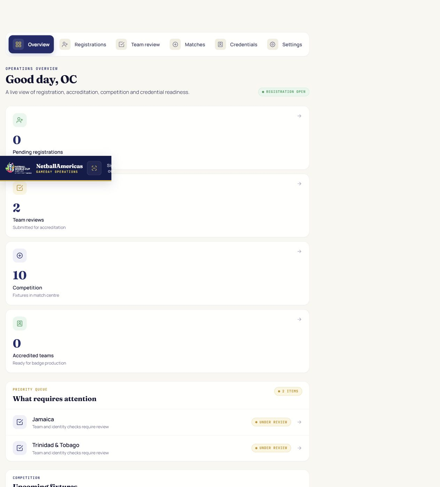
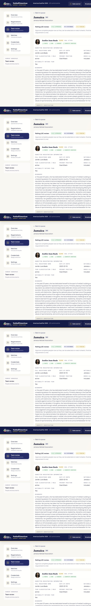

What the LOC account controls
The LOC account reviews and decides; it does not act as a Team Manager or SportsBB configuration administrator. Only one authorised LOC officer should use this login. Scorer, statistician, broadcaster, gate and other GameDay roles use separate role-specific access.
Find a task
Sign in securely
- Open the LOC Platform—not the Team Portal.
- Enter the authorised LOC email and password.
- Confirm the header identifies you as the authorised LOC officer.
- Sign out whenever leaving the workstation.
Use Forgot password where available or the approved administrative reset procedure. Never create shared unofficial credentials in the database.
Use the operations overview

| Navigation | Purpose |
|---|---|
| Overview | Live counts, priority queues, fixtures and recent activity. |
| Registrations | Approve or reject new national delegation accounts. |
| Team review | Review people, photos, consent, eligibility and identity evidence. |
| Matches | Fixtures and results oversight. |
| Credentials | Badge production after final accreditation. |
| Settings | Registration window and audit history. |
Approve a delegation account
- Open Registrations.
- Check the represented country, association, team name, Team Manager, contact email and phone.
- Confirm the contact is authorised by the national association.
- Select Approve to unlock team entry, or Reject/Return with a clear reason.
Review every submitted person

- Open Team review and choose a delegation.
- Use Approved, Returned and Pending to filter the queue.
- Read the full registered name, DOB where required, nationality, category, classification/role, position, bench allocation and biography.
- Check the profile photograph and consent where required.
- For players only, check nationality eligibility when nationality differs from the team.
- Review identity evidence and record the decision.
Manually verify identity
- Confirm the document belongs to the named player.
- Compare registered name, nationality and DOB with the submitted information.
- Confirm issuing country and document type.
- For passports, confirm expiry remains valid through the tournament end date.
- Record Verified or Return/Reject with a specific correction note.
Approve or return an individual
| Decision | Use when | Result |
|---|---|---|
| Approve person | Required fields and evidence are complete, consistent and acceptable. | Player becomes match-sheet eligible; button changes to LOC approved. |
| Return | A correction, clearer image, missing consent or other action is required. | Team sees Returned and the correction note. |
| Pending | No LOC decision has been recorded on the current version. | Remains in review queue. |
Write concise, actionable return notes. Do not include unnecessary sensitive information in notes or audit records.
Finalise team accreditation
Final accreditation is available only when every required team condition and current individual decision is satisfied: configured player minimum/maximum, reserve maximum, required officials, bench rules, biographies, photos, DOB/consent, identity verification and eligibility evidence.
- Review the approved/returned/pending counts.
- Resolve all pending and returned people.
- Confirm the full team meets configured rules.
- Select Finalise team accreditation.
- Verify the team becomes Accredited and credentials are available.
Issue and manage credentials
Open Credentials after final accreditation. Confirm the person, role/category, delegation, access zones and credential status before printing. Revoke compromised or invalid credentials through the platform and preserve the audit trail.
Registration window and audit history
Use Settings to monitor the configured registration window and audit events. Closing registration prevents new teams from registering; existing teams retain authorised access to manage permitted changes. Audit history must identify meaningful targets such as delegation/country as well as actor and timestamp.
Privacy and accountable review
- Access only information needed for the active accreditation task.
- Keep records accurate and honour correction requests through the approved workflow.
- Do not retain identity files outside the platform.
- Use notes for decisions—not speculation or excessive personal detail.
- Report suspected access, disclosure or account compromise immediately.
- Use the footer’s Data handling & privacy notice for the complete policy.
Troubleshooting and escalation
| Problem | Action |
|---|---|
| Submitted team not visible | Confirm the API is running, the team submitted to the same production database and LOC RLS visibility is correct. |
| No tournament configured | Escalate to SportsBB Administrator; do not create ad-hoc rows. |
| Identity file will not open | Confirm current authorised session and file presence; record the time/error without copying the document. |
| Finalise button disabled | Check all person decisions and configured team requirements. |
| Password compromise | Reset credentials, end sessions and notify engineering immediately. |
| Unexpected 401/500 | Record URL, time and action; check API/service logs through engineering. |
Operational contact: loc@netballamericas.org